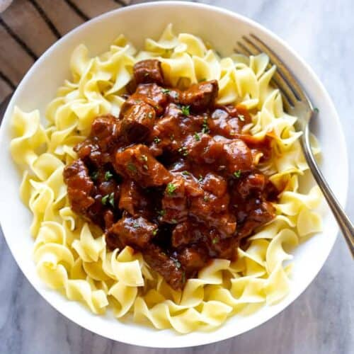

Hungarian Pörkölt

Description:
Pörkölt (Peur-keult) is Hungarian for beef stew and is a popular Hungarian recipe made by braising meat and simmering it with onions in a tomato based sauce. It’s served warm, over noodles and it’s absolutely delicious.
Ingrediends:
- 1 Sweet Onion e.g Vidalia, thinly sliced
- 1 Long Green Pepper thinly sliced
- 2 cloves Garlic chopped
- 1.5 lbs Beef preferably chuck or other stew cut
- 4 tablespoons Sweet Hungarian Paprika
- 1 Tomato chopped, optional
- 1 tablespoon Tomato paste optional
- 1 teaspoon Salt or more to taste
- 1/4 teaspoon Black pepper or more to taste
- 1/2 teaspoon Caraway seeds optional
- 1 Bay Leaf
- 1-1.5 cups Water or Beef Broth or more, but only enough to almost cover the meat
Steps:
- Sauté your onions. Add either butter, oil or lard into a Duch Oven or a braising pot, sauté the onions for about 8-10 minutes, until nicely soft and almost caramelized.
- Add chopped garlic and thinly sliced pepper and cook for 2 – 3 minutes.
- Add beef.Cut your meat into tiny cubes of 1/2". Once you add the beef to the pot, cook it for about 5 minutes, until no longer pink.
- Add Hungarian Paprika and tomatoes. This is a very important step that can make or break your Pörkölt! Paprika can burn easily and if you let it cook for too long it will become bitter and your beef stew won’t taste as good. So, just add the paprika and mix it well. Then add tomato and/or tomato paste if using, mix it again and move on to your liquid base.
- Add broth or water. Add 1 to 1.5 cups of liquid to your pot; just enough that it hardly covers your meat. You could add salt and pepper now, or this could wait until the sauce is cooked, so you can better control the seasoning. The latter option is preferred though, especially considering that the sodium levels of your beef broth may vary. This stew is intended to be thick and therefore you shouldn’t add a lot of liquid. Cover it and cook on low for 90 minutes. Once cooked, adjust seasoning and serve. You can add a dollop of sour cream while serving. It works amazing.